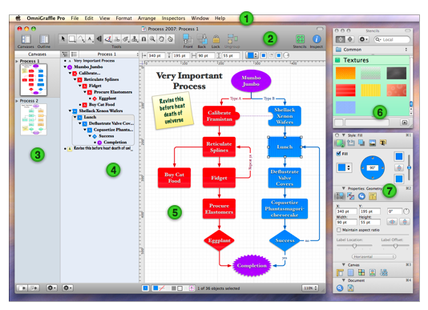

Introduction to the Interface

 The menu bar. Just like in any Mac OS X application, this is where you can access all varieties of commands.
The menu bar. Just like in any Mac OS X application, this is where you can access all varieties of commands.  The toolbar provides easy access to the controls of your choosing. Select Customize Toolbar from the View menu to arrange your favorite tools on the toolbar. Most importantly, the toolbar is home to the tool palette you use to create diagrams. You can show and hide the toolbar using the white button on the right side of the title bar.
The toolbar provides easy access to the controls of your choosing. Select Customize Toolbar from the View menu to arrange your favorite tools on the toolbar. Most importantly, the toolbar is home to the tool palette you use to create diagrams. You can show and hide the toolbar using the white button on the right side of the title bar.  The Canvases Sidebar shows all of the canvases in your document and the layers they contain. You can click a canvas to work on it in the main canvas view.
The Canvases Sidebar shows all of the canvases in your document and the layers they contain. You can click a canvas to work on it in the main canvas view.  The Outline sidebar gives a hierarchical, text-based view of the diagram on the selected canvas. This is an excellent way to quickly create lots of objects, connect them together, and rearrange their structure. You can also switch to the List sidebar, which shows the front to back order of every object on every layer of the selected canvas.
The Outline sidebar gives a hierarchical, text-based view of the diagram on the selected canvas. This is an excellent way to quickly create lots of objects, connect them together, and rearrange their structure. You can also switch to the List sidebar, which shows the front to back order of every object on every layer of the selected canvas.  The canvas view is where your drawing actually happens. You can use the drawing tools to create shapes and connect them together with lines. You can drag objects around, group objects, make tables, and do way more stuff than can be mentioned in this overview.
The canvas view is where your drawing actually happens. You can use the drawing tools to create shapes and connect them together with lines. You can drag objects around, group objects, make tables, and do way more stuff than can be mentioned in this overview.  The stencils window contains lots of pre-made objects for a huge range of purposes. OmniGraffle comes with plenty of good stencils, and you can even search Graffletopia, an excellent third-party repository for stencils created by OmniGraffle users.
The stencils window contains lots of pre-made objects for a huge range of purposes. OmniGraffle comes with plenty of good stencils, and you can even search Graffletopia, an excellent third-party repository for stencils created by OmniGraffle users.  The inspectors contain all of the controls you need to modify selected objects on the canvas, the canvas itself, and the whole document. There are sixteen different inspectors, organized based on the kinds of things they affect: Style, Properties, Canvas, and Document.
The inspectors contain all of the controls you need to modify selected objects on the canvas, the canvas itself, and the whole document. There are sixteen different inspectors, organized based on the kinds of things they affect: Style, Properties, Canvas, and Document.